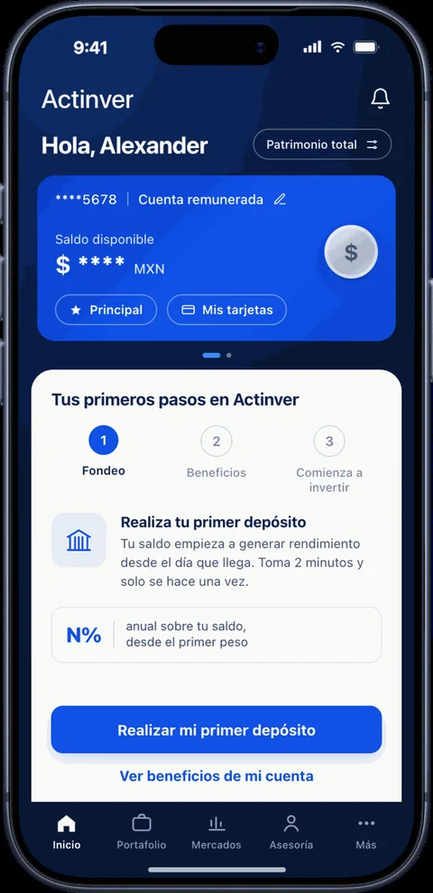
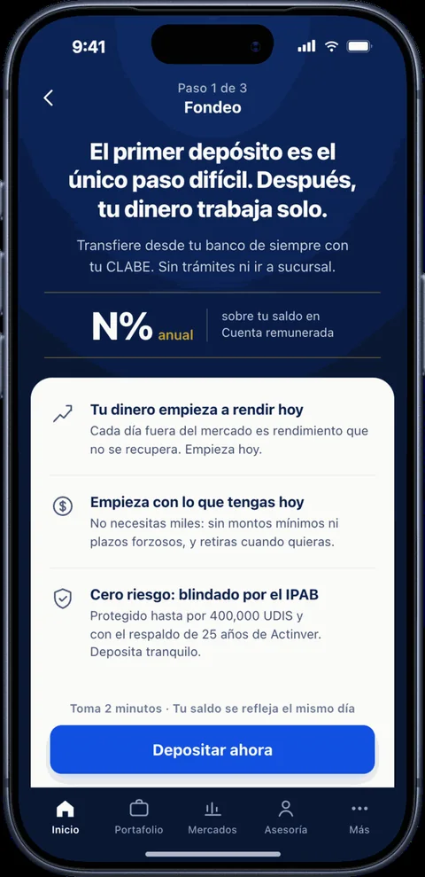
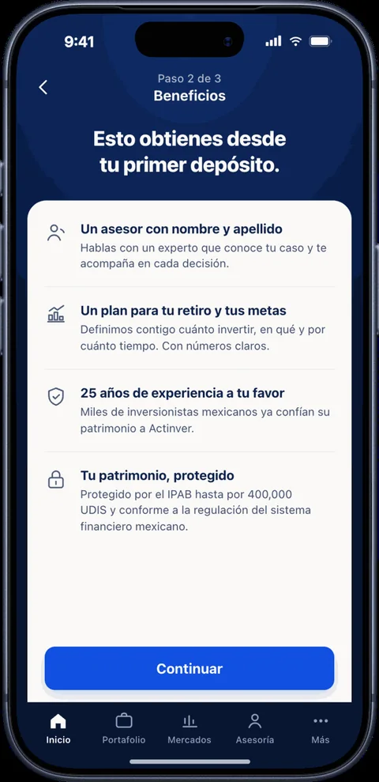
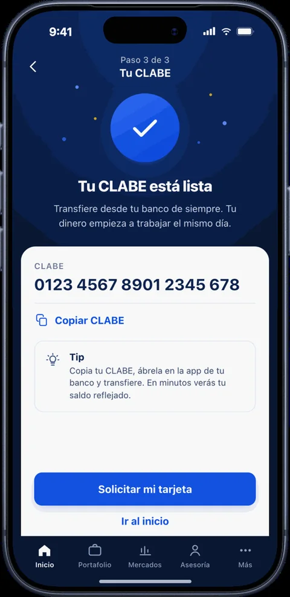

El cliente no llega a la banca patrimonial de un salto. Llega subiendo escalones.
En casi cualquier banco, la cuenta remunerada vive en la columna de captación: un producto que se mide por saldo y se defiende con tasa. Es una lectura cómoda y equivocada. La cuenta remunerada es la puerta por donde entra el cliente, y el primer escalón de un camino que puede terminar en asesoría patrimonial.
01 · EL MERCADOEl ahorro se está moviendo, y no hacia la banca tradicional
Nu suma más de 15 millones de clientes en México; hace cinco años no existía aquí. Revolut sumó 290 mil usuarios en nueve semanas. Ualá paga 15% anual para que la gente le lleve la nómina.
Ninguno compite por saldo. Compiten por quedarse con la relación completa del cliente, y la cuenta remunerada es el gancho con el que la abren. Con el techo del mercado cerca de 15%, nadie puede ganar esa carrera por mucho tiempo solo con tasa.
02 · EL ESPEJOEl tope no es un límite: es a quién decides cazar
Mifel es un caso útil para cualquier banco mediano: licencia propia, respaldo del IPAB y una apuesta digital agresiva. Paga 10% a la vista hasta $500,000 sin pedir nada a cambio, más de lo que da su propio pagaré. Lo contuvo con un tope, una caída a 0% arriba de ese tope y una tasa promocional con fecha.
Openbank tomó el camino opuesto, y la comparación dice más que cualquier opinión:
| Variable | Mifel | Openbank |
|---|---|---|
| Tasa | 10% | 13% |
| Tope de saldo | $500,000 | $30,000 |
| Condición | Ninguna | Una transacción al mes |
| Costo máximo por cliente al año | ≈ $50,000 | ≈ $3,900 |
Tasas públicas a septiembre de 2026; cambian con Banxico.
Mifel caza al cliente que tiene su dinero en otro banco. Openbank caza al que ya es suyo. La tasa es el titular; el tope es la estrategia.
03 · LA TESISCada escalón da el dato que hace posible el siguiente
Ningún producto de un banco debería venderse por campaña. Se vende porque el cliente hizo algo antes que dice que está listo. Esa es la diferencia entre ofrecer y acertar.
- Abre la cuenta y mete su primer dinero. Si no deposita en los primeros días, el alta no sirvió de nada.
- Usa la tarjeta todos los días. Ver crecer el rendimiento lo hace volver; ese hábito es el espacio de venta que no cuesta nada.
- Protege lo que ya usa. Después del primer gasto, un seguro de compras se explica solo.
- Trae la nómina o gasta con constancia. Tres meses de movimientos dicen más de su capacidad de pago que cualquier comprobante.
- Junta más de lo que necesita. La app le muestra cuánto ganaría en un fondo, y contratar es activar algo que ya trae.
- Se vuelve cliente patrimonial. Ahí está el margen real, y ahí termina el recorrido que empezó con una cuenta de ahorro.
Toda la escalera entra por una sola puerta
En muchos bancos, la cuenta remunerada y el onboarding se trabajan como dos iniciativas separadas. En la práctica son la misma: cada punto de conversión que se pierde arriba se pierde multiplicado en todos los escalones de abajo.
Un alta aprobada sin dinero no es un cliente: es un contrato vacío.
El escalón donde se cae la ecuación casi siempre es el primer depósito, y es un problema de diseño, no de marketing:
- La pantalla de inicio abre con una tarea, no con un saludo: el fondeo como única acción visible.
- El argumento para depositar hoy va al frente: rendimiento desde el primer día, sin monto mínimo y con respaldo.
- La CLABE queda a un toque.
- La tarjeta se ofrece dentro del flujo, justo cuando el cliente ya fondeó, y no en una sucursal.
Así lo resolví en el diseño: cuatro pantallas que convierten el primer depósito en una tarea de tres pasos.

InicioEl alta no termina en una bienvenidaLa pantalla principal abre con una tarea, no con un saludo: paso 1 de 3 y el fondeo como única acción visible.

Paso 1 · FondeoEl argumento para depositar hoyTres razones en orden: el rendimiento corre desde el primer día, no hay monto mínimo y el IPAB respalda el dinero.

Paso 2 · BeneficiosLo que el cliente gana, no lo que el banco ofreceAsesor con nombre, un plan a su medida y respaldo patrimonial, antes del depósito y no después.

Paso 3 · CLABE y tarjetaLa tarjeta se pide aquí, no se buscaEl cliente acaba de fondear y tiene el impulso: es el mejor momento para ofrecérsela. La CLABE queda a un toque.
Y tres números compartidos entre equipos, en lugar de diez: activación (primer depósito en 7 días), conversión (tarjeta entregada y activa) y retención (saldo vivo al tercer mes). Sin retención, la captación es prestada: entra por la tasa y se va por la tasa.
05 · LA VENTAJALo que una sofipo no puede copiar, y por qué tiene reloj
Cobertura máxima por persona: dieciséis veces más en un banco.
Un banco con casa de bolsa y gestora tiene dos ventajas que ninguna fintech compra con capital. La primera es ese respaldo, que sorprendentemente casi nadie usa en sus mensajes. La segunda es qué puede pedir a cambio: en vez de pagar la tasa alta por traer la nómina, puede pagarla por saldo invertido en sus fondos. Ahí la tasa deja de salir del margen de captación y se paga con el fee del propio fondo.
Pero es ventaja de tiempo, no estructural. Kapital compró los negocios de Intercam, casa de bolsa y gestora incluidas. Ya hay alguien ensamblando exactamente estas piezas.
Tres preguntas antes de discutir la tasa
- ¿Hasta qué monto pagamos la tasa alta? El tope define el costo por cliente más que la tasa, y declara a quién vas a cazar.
- ¿Qué le pedimos al cliente a cambio? Nómina, gasto con tarjeta o saldo en fondos: cada opción compra algo distinto.
- ¿Quién lo atiende en cada escalón? Digital, asesor o banca patrimonial. Sin eso, el flujo se puede dibujar pero no operar.
Este artículo refleja una opinión personal. Las pantallas son una propuesta de diseño y no muestran datos reales de clientes. Fuentes públicas consultadas en septiembre de 2026: Marketing4eCommerce, FintechExpert, Ecosistema Startup, Ualá, El Financiero y Tasas.mx. También en Medium.
¿Tu producto de captación compite solo con tasa?
Diseño productos financieros que convierten el primer depósito en una relación: del onboarding a la estrategia de portafolio.